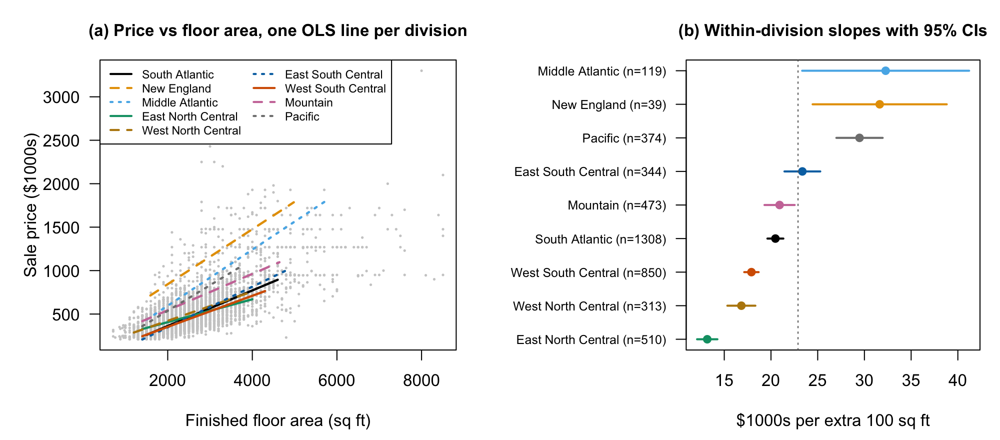
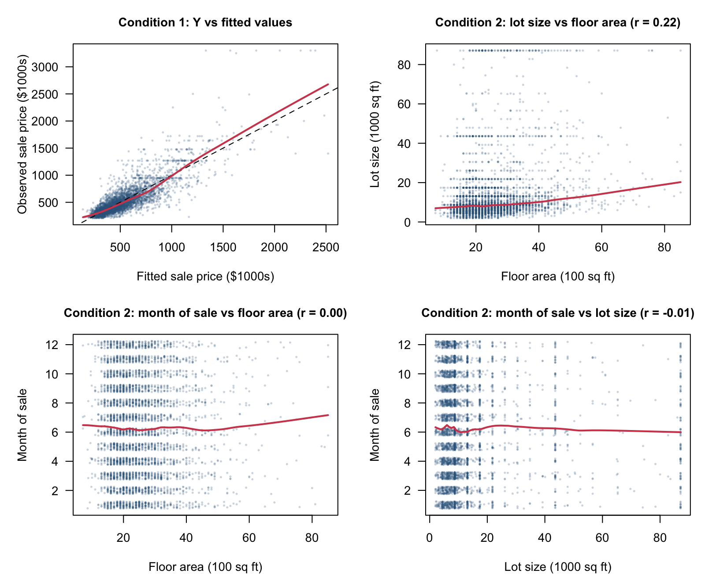
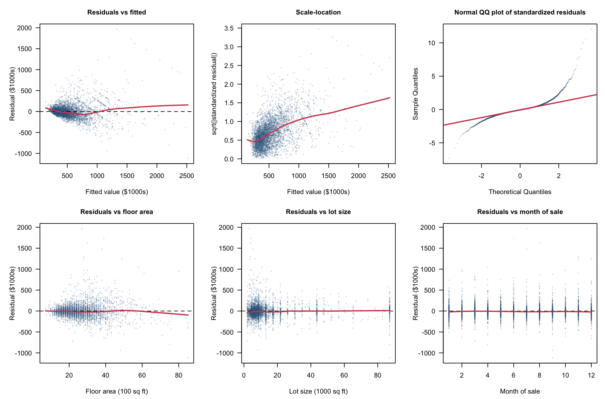
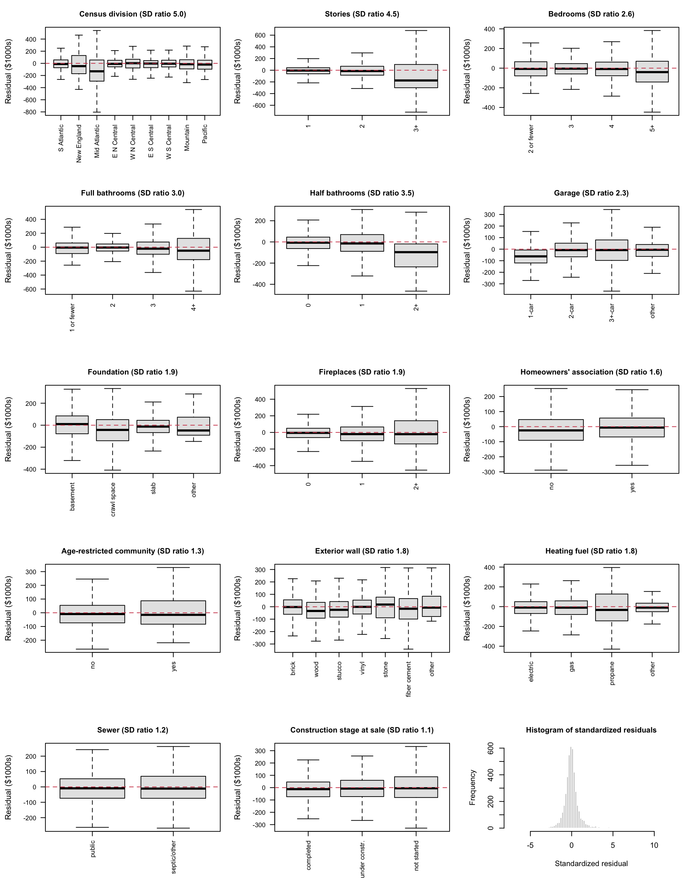

STA302H1 Fall 2026 Final Project, Part 1: Research Proposal. Group [##]
Haiwen Yi — [contribution]; [Member 2] — [contribution]; [Member 3] — [contribution]; [Member 4] — [contribution].
Research question. Among newly built, detached single-family homes sold in the United States in 2025, how much does an extra 100 square feet of finished floor area add to the sale price (in $1000s, including the lot), and does this marginal price of floor area differ across the nine Census divisions, holding constant lot size, bedrooms, full and half bathrooms, stories, garage, foundation, fireplaces, exterior wall material, heating fuel, sewer type, homeowners’ association and age-restricted status, construction stage at sale, and month of sale?
Why a linear model. Comparing average price per square foot across divisions is simpler, but it mixes floor area with everything that comes with bigger homes, such as extra bathrooms, garages and basements. Multiple linear regression holds these features fixed and, through a floor area × division interaction, lets the floor-area slope differ by division. The answer comes from the eight interaction coefficients and the partial F test of whether they are all zero, and from each division’s floor-area slope with its 95% confidence interval.
Literature. Rosen (1974) showed that the price of a differentiated good can be written as a function of its characteristics; regressing price on characteristics recovers their implicit prices, which are market equilibrium outcomes and so may differ between markets. Our floor-area slope is the implicit price of space, and the interaction asks whether it is equal across divisions. Gyourko and Saiz (2006) found that construction costs make up most of the price of new houses in most markets and differ substantially across U.S. markets with local wages, unionization, topography and regulation. Because extra floor area is mostly extra structure, this predicts that the price of space varies by region. Glaeser, Gyourko and Saks (2005) found Manhattan prices more than twice supply costs and argued that land-use regulation also constrains supply in several other U.S. markets, where rising demand raises prices rather than the number of homes; this suggests steeper price–area slopes in tightly regulated regions. None of these three studies uses a national sample of individual new homes to compare the adjusted price of floor area across all nine divisions; that is our contribution.
Who benefits. Home builders choosing house sizes by region, housing agencies and municipalities weighing minimum-size rules or starter-home policies, and appraisers and buyers who need a region-specific value for extra space.
The data are the 2025 microdata file of the U.S. Census Bureau’s Survey of Construction (U.S. Census Bureau, 2026). This national survey samples about 1 in 50 new houses from building permits and canvassed areas, and interviews builders or owners about dates and over 40 characteristics. It produces official statistics on new residential construction and sales; HUD funds the collection of the characteristics (U.S. Census Bureau, n.d.).
We kept homes built for sale, detached and outside condominiums, with a 2025 sales contract and all model variables reported (6,185 of 25,246 records). All summaries and models use a random 70% training set (n = 4,330).
The response, sale price, is continuous (nearest $100; mean $527k, median $433k, SD $307k). It is strongly right-skewed with high outliers, and 7.1% of prices were top- or bottom-coded by the Census Bureau, so we expect non-normal, unequal-variance errors. Each row is a different house from a probability sample, so independence is plausible, although homes in the same subdivision cannot be identified.
| Variable | Type (reference level) | Training-set summary |
|---|---|---|
| Sale price, $1000s (response) | Numerical | Mean 527, SD 307, min 210, median 433, max 3,300; skewness 3.04 |
| Floor area, 100 sq ft | Numerical | Mean 25.4, SD 9.9, min 7.1, median 23.0, max 85.1; skewness 1.67 |
| Lot size, 1000 sq ft | Numerical | Mean 14.1, SD 16.6, min 2.0, median 8.7, max 87.1; skewness 3.10 |
| Month of sale (1–12) | Numerical | Mean 6.3, SD 3.4, min 1, median 6, max 12; skewness 0.09 |
| Census division | 9 levels (South Atlantic) | South Atlantic 1,308; New England 39; Middle Atlantic 119; East North Central 510; West North Central 313; East South Central 344; West South Central 850; Mountain 473; Pacific 374 |
| Stories | 3 (one) | 1: 2,120; 2: 2,116; 3+: 94 |
| Bedrooms | 4 (two or fewer) | ≤2: 154; 3: 1,780; 4: 1,777; 5+: 619 |
| Full bathrooms | 4 (one or fewer) | ≤1: 46; 2: 2,664; 3: 1,203; 4+: 417 |
| Half bathrooms | 3 (none) | 0: 2,373; 1: 1,897; 2+: 60 |
| Garage | 4 (one-car) | 1-car: 158; 2-car: 3,124; 3+-car: 919; other: 129 |
| Foundation | 4 (basement) | Basement: 992; crawl space: 403; slab: 2,926; other: 9 |
| Fireplaces | 3 (none) | 0: 2,781; 1: 1,383; 2+: 166 |
| Homeowners’ association | 2 (no) | No: 1,109; yes: 3,221 |
| Age-restricted community | 2 (no) | No: 4,216; yes: 114 |
| Exterior wall material | 7 (brick) | Brick 897; wood 169; stucco 906; vinyl 1,362; stone 56; fiber cement 926; other 14 |
| Heating fuel | 4 (electricity) | Electricity 2,147; natural gas 2,083; propane 52; other 48 |
| Sewer | 2 (public) | Public 3,893; septic or other 437 |
| Construction stage at sale | 3 (completed) | Completed 2,452; under construction 1,344; not started 534 |
Interaction. Following the three papers above, the price of floor area should differ by region. Figure 1 supports this: within-division slopes range from about $13k per 100 sq ft (East North Central) to $32k (Middle Atlantic).

Trustworthiness. The data come from a federal statistical agency, use a documented probability sampling design, and are released with full documentation, sampling weights and a flag on every value altered for confidentiality. Ownership and origin are clear: the Census Bureau collects the data, HUD funds the collection, and the files are free to the public. The producer discloses the main limitations (top- and bottom-coding, geography limited to nine divisions), and we report them.
Ethical collection and use. Respondents are builders or owners reporting facts about a house, not personal attributes of occupants. The public file contains no addresses or builder names, and extreme prices and floor areas are top- and bottom-coded to prevent disclosure. We use only the public file and make no attempt to identify houses or builders. Our results describe associations among new homes sold in 2025; we will not present them as causal effects or as appraisals of individual homes, and we will note that each division contains very different local markets.
We fitted the preliminary model by least squares on the training set: sale price on floor area, division, their interaction and the other 15 predictors (17 predictors, 52 coefficients). It explains most of the variation (R² = 0.713, adjusted R² = 0.710). The eight interaction coefficients are jointly significant (partial F(8, 4278) = 37.3, p < 0.001) and add 0.020 to R².
| Division | n | Slope | SE | 95% CI | Difference from South Atlantic (SE) |
|---|---|---|---|---|---|
| South Atlantic (reference) | 1,308 | 11.83 | 0.63 | (10.60, 13.07) | — |
| New England | 39 | 19.26 | 2.15 | (15.05, 23.47) | 7.43 (2.17) |
| Middle Atlantic | 119 | 24.56 | 1.14 | (22.32, 26.79) | 12.72 (1.21) |
| East North Central | 510 | 6.85 | 0.85 | (5.19, 8.51) | −4.98 (0.91) |
| West North Central | 313 | 10.57 | 1.15 | (8.32, 12.82) | −1.26 (1.20) |
| East South Central | 344 | 13.78 | 0.97 | (11.88, 15.68) | 1.95 (1.00) |
| West South Central | 850 | 9.27 | 0.79 | (7.71, 10.82) | −2.57 (0.82) |
| Mountain | 473 | 14.60 | 0.80 | (13.03, 16.17) | 2.77 (0.87) |
| Pacific | 374 | 21.70 | 1.14 | (19.47, 23.92) | 9.86 (1.17) |


Assumptions. Condition 1 holds approximately: prices scatter around one increasing curve but spread out at high fitted values (Figure 2). Condition 2 holds: numerical predictors show no curved patterns (|r| ≤ 0.22). Residual plots (Figures 3–4) then show:
We do not correct these violations yet.

Comparison with the literature. As Gyourko and Saiz (2006) and Glaeser et al. (2005) suggest, the price of space varies widely: 100 extra square feet add about $7k in East North Central but $22k–$25k in the Pacific and Middle Atlantic divisions. Two results are surprising. Lot size is not significant (p = 0.28) although land is part of the price, perhaps because large lots are mostly in cheaper rural areas. Holding floor area fixed, more bedrooms lower the price (5+ against ≤2: −$76k), consistent with smaller rooms. The New England and Middle Atlantic slopes rest on few homes.
Predictors. Floor area, division and their interaction must stay because they answer the research question; lot size stays because hedonic theory treats land as part of the price (Rosen, 1974). For the other 14 predictors we will use partial F tests and backward selection by AIC and BIC with the required terms fixed, and use context from the literature, such as features tied to construction cost, to settle close calls. A predictor will be dropped only if removing it lowers the chosen criterion and its partial F test is not significant at the 5% level; where AIC and BIC disagree we will prefer the simpler model if adjusted R² barely changes. We will check multicollinearity with generalized variance inflation factors.
Assumptions. We will redraw the full set of residual plots after every change (after transforming, after variable selection and for the final model), and each time check leverage, standardized residuals, Cook’s distance, DFFITS and DFBETAS.
Transformations. Right skew, variance growing with the mean and the curved floor-area pattern point to a Box-Cox power transformation of price. We will compare the suggested power with the log, which reads as a percentage effect, and try log floor area so that the slope becomes an elasticity. If unequal variance remains, we will add heteroscedasticity-consistent (HC3) standard errors. We will also check the results without top-coded prices and with the survey’s sampling weights, and evaluate the final model only once, at the end, on the 30% held-out test set.
| Task | Lead | Nov 9–15 | Nov 16–22 | Nov 23–29 | Nov 30–Dec 6 | Final due date |
|---|---|---|---|---|---|---|
| Transformations; re-check assumptions | Haiwen Yi, [Member 2] | ■ | ||||
| Variable selection, VIF, influence diagnostics | [Member 3], [Member 4] | ■ | ||||
| Final model, robustness checks, one-time test-set check | All | ■ | ||||
| Poster (figures and text) | [Member 2], [Member 3] | ■ | ■ | |||
| Record presentation | All | ■ | ||||
| Final review and submission | Haiwen Yi | ■ |
Fox, J., & Weisberg, S. (2019). An R companion to applied regression (3rd ed.). Sage.
Glaeser, E. L., Gyourko, J., & Saks, R. (2005). Why is Manhattan so expensive? Regulation and the rise in housing prices. The Journal of Law and Economics, 48(2), 331–369. https://doi.org/10.1086/429979
Gyourko, J., & Saiz, A. (2006). Construction costs and the supply of housing structure. Journal of Regional Science, 46(4), 661–680. https://doi.org/10.1111/j.1467-9787.2006.00472.x
R Core Team. (2025). R: A language and environment for statistical computing (Version 4.4.3) [Computer software]. R Foundation for Statistical Computing. https://www.R-project.org/
Rosen, S. (1974). Hedonic prices and implicit markets: Product differentiation in pure competition. Journal of Political Economy, 82(1), 34–55. https://doi.org/10.1086/260169
U.S. Census Bureau. (2026). Survey of Construction (SOC) microdata: 2025 annual file [Data set]. https://www.census.gov/construction/chars/microdata.html
U.S. Census Bureau. (n.d.). Survey of Construction microdata files: General information and variable descriptions [Documentation]. https://www.census.gov/construction/chars/pdf/socmicro_info.pdf
| Term | Estimate | SE | 95% CI |
|---|---|---|---|
| Intercept | 127.03 | 35.11 | (58.20, 195.86) |
| Floor area (per 100 sq ft) | 11.83 | 0.63 | (10.60, 13.07) |
| Division: New England | 355.76 | 76.85 | (205.09, 506.43) |
| Division: Middle Atlantic | −76.08 | 40.73 | (−155.92, 3.77) |
| Division: East North Central | 145.53 | 25.92 | (94.71, 196.35) |
| Division: West North Central | 34.89 | 32.17 | (−28.18, 97.96) |
| Division: East South Central | −39.31 | 27.28 | (−92.79, 14.18) |
| Division: West South Central | 33.91 | 23.00 | (−11.17, 79.00) |
| Division: Mountain | 81.27 | 25.37 | (31.53, 131.01) |
| Division: Pacific | −61.96 | 30.57 | (−121.89, −2.03) |
| Lot size (per 1000 sq ft) | 0.21 | 0.20 | (−0.17, 0.60) |
| Stories: 2 | −32.17 | 7.01 | (−45.91, −18.43) |
| Stories: 3+ | 211.47 | 19.53 | (173.17, 249.76) |
| Bedrooms: 3 | −35.26 | 15.73 | (−66.10, −4.42) |
| Bedrooms: 4 | −54.27 | 16.67 | (−86.95, −21.59) |
| Bedrooms: 5+ | −76.19 | 19.06 | (−113.56, −38.81) |
| Full bathrooms: 2 | 49.28 | 27.39 | (−4.41, 102.97) |
| Full bathrooms: 3 | 122.62 | 28.57 | (66.62, 178.63) |
| Full bathrooms: 4+ | 312.07 | 30.78 | (251.71, 372.42) |
| Half bathrooms: 1 | 48.75 | 6.81 | (35.41, 62.09) |
| Half bathrooms: 2+ | 172.85 | 23.90 | (125.99, 219.72) |
| Garage: 2-car | −60.46 | 14.35 | (−88.59, −32.32) |
| Garage: 3+-car | −33.40 | 16.08 | (−64.92, −1.88) |
| Garage: other | −44.13 | 20.08 | (−83.50, −4.75) |
| Foundation: crawl space | 91.67 | 11.23 | (69.64, 113.69) |
| Foundation: slab | −3.26 | 8.64 | (−20.19, 13.68) |
| Foundation: other | 36.24 | 57.46 | (−76.42, 148.90) |
| Fireplaces: 1 | 77.14 | 6.53 | (64.33, 89.95) |
| Fireplaces: 2+ | 93.55 | 14.50 | (65.13, 121.98) |
| Homeowners’ association: yes | −11.59 | 6.65 | (−24.62, 1.44) |
| Age-restricted: yes | 27.14 | 16.95 | (−6.10, 60.37) |
| Exterior wall: wood | 19.68 | 15.69 | (−11.08, 50.44) |
| Exterior wall: stucco | 25.70 | 11.07 | (4.00, 47.39) |
| Exterior wall: vinyl | −31.32 | 9.71 | (−50.36, −12.28) |
| Exterior wall: stone | 13.42 | 23.28 | (−32.22, 59.05) |
| Exterior wall: fiber cement | 15.60 | 9.46 | (−2.94, 34.14) |
| Exterior wall: other | 52.35 | 45.44 | (−36.74, 141.44) |
| Heating fuel: gas | 21.83 | 6.80 | (8.51, 35.16) |
| Heating fuel: propane | −61.53 | 26.73 | (−113.94, −9.13) |
| Heating fuel: other | 9.10 | 25.77 | (−41.41, 59.62) |
| Sewer: septic or other | −13.59 | 10.66 | (−34.49, 7.32) |
| Stage at sale: under construction | −1.83 | 5.81 | (−13.22, 9.57) |
| Stage at sale: not started | 15.31 | 8.38 | (−1.11, 31.74) |
| Month of sale | 1.44 | 0.74 | (−0.02, 2.90) |
| Floor area × New England | 7.43 | 2.17 | (3.17, 11.68) |
| Floor area × Middle Atlantic | 12.72 | 1.21 | (10.36, 15.09) |
| Floor area × East North Central | −4.98 | 0.91 | (−6.76, −3.21) |
| Floor area × West North Central | −1.26 | 1.20 | (−3.62, 1.10) |
| Floor area × East South Central | 1.95 | 1.00 | (−0.02, 3.91) |
| Floor area × West South Central | −2.57 | 0.82 | (−4.18, −0.96) |
| Floor area × Mountain | 2.77 | 0.87 | (1.06, 4.47) |
| Floor area × Pacific | 9.86 | 1.17 | (7.56, 12.16) |